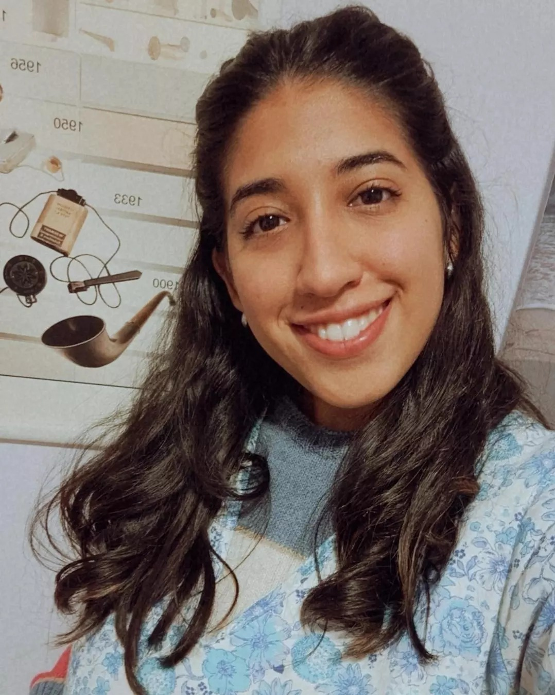
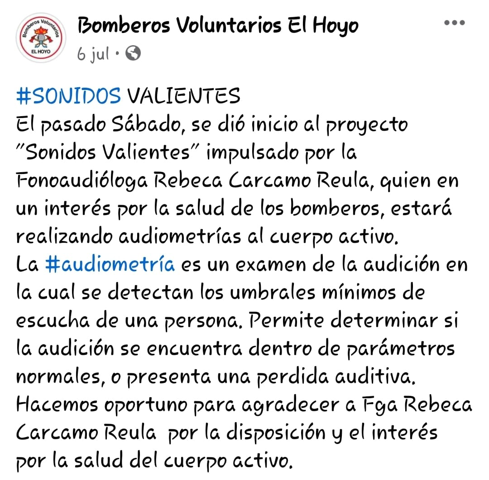

QUIEN SOY
Me llamo Rebeca Carcamo Reula y soy Licenciada en Fonoaudióloga.
Con gran emocion e ilucion me recibí
en la Universidad Nacional de Córdoba en Argentina
Me encuentro capacitada para encarar diferentes patologias
en la rama de la Fonoaudiología tanto en niños, como en
jóvenes y adultos; siempre con ánimos de brindar el máximo bienestar
a los pacientes a través del compromiso, integridad y desempeño.
Entre todas las dificultades que trato, se destacan
las áreas del Lenguaje, Habla, Voz, Audición y Motricidad Oral.
Paralelamente, realizo estudios Auditivos como son las audiomtrías
y logoaudiometrías tanto en las áreas de
ingreso escolar, laboral, preocupacionales,
o simplemente por un control auditivo.
PROYECTO "SONIDOS VALIENTES"
En mi estadía en la cordillera chubutense,
inicié el proyecto "Sonidos Valientes".Este proyecto, iniciado sin
fines de lucro, tenia como
objetivo brindar audiometrías de control de salud auditiva
a los diferentes cuarteles de Bomberos de los pueblos de La Comarca.
Este proyecto se inicio como una forma de agradecer la
labor desinteresada de los Bomberos
Voluntarios de toda la comarca que siempre estan atentos y serviciales
a todas las necesidades de la comunidad.


DONDE SE PUEDE ACCEDER A UNA CONSULTA
Hoy en día me encuentro trabajando en la costa chubutense.
La atencion a los niños la concentro por la tarde en los
consultorios de la clinica Quirón en Playa Unión, Rawson,
trabajando en las diferentes áreas de la Fonoaudiología o realizando
estudios auditivos.
En cuanto a los jovenes y adultos concentro la atencion
en el Instituto Cardiovascular de Rawson.
Siempre se puede coordinar algun turno para tratar las diferentes áreas
de la fonoaudiología y realizar distintos estudios auditivos a quien lo solicite.
Por otro lado, de manera online o remota realizo tratamiento de determinadas
dificultades.
Siempre me pueden encontrar en mis redes sociales,
o a traves de mi numero de whatsapp, no dudes en seguirme!